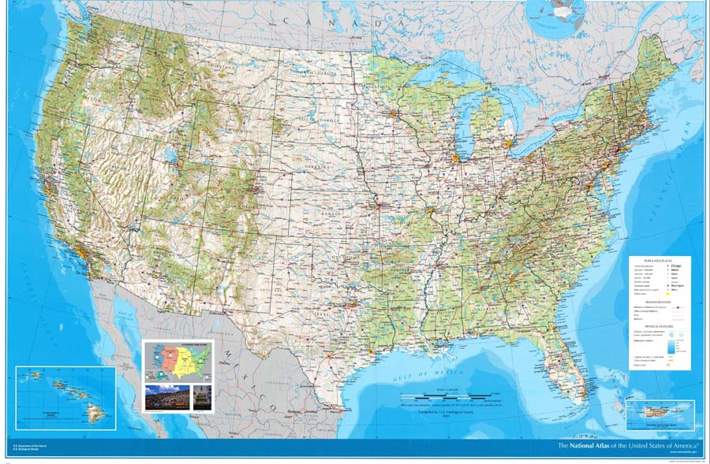
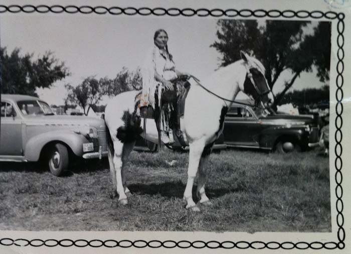
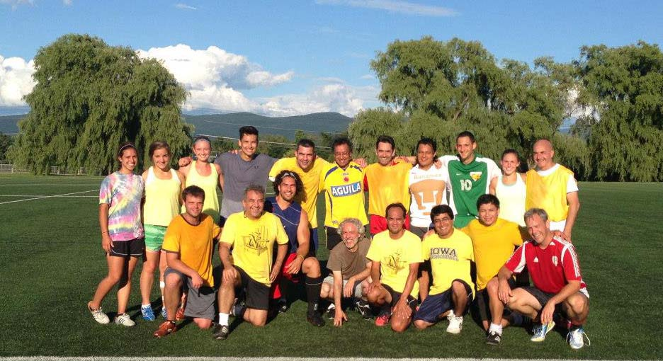
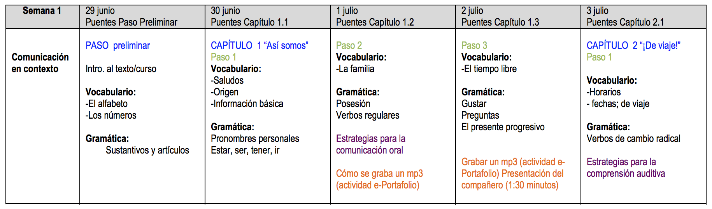

Español 1.5
Introducción
Joseph V. Casillas
Middlebury College: Verano 2015
Acerca del profe
Mi nombre es Joseph Casillas.

Soy de Arizona.

Tengo una perra.

Mi Padre.


Mi madre.



Soy lingüista.


Estudio el bilingüismo y la adquisición de segundas lenguas.
Es mi octavo verano en Middlebury.
Me gusta el fútbol.

Con un compañero...

- Contesta las siguientes preguntas
- ¿De dónde soy?
- ¿Cómo se llama mi perra?
- ¿Qué estudio?
- ¿Dónde estudio?
- ¿Alguna pregunta para mí?
Con un compañero nuevo...
- Pregúntale tres cosas nuevas y cuéntanoslas
Introducción al curso
El plan

¿Qué vais a aprender?
¿Cómo lo vamos a hacer? El programa.
Sugerencias para tener éxito.
Objetivos

Desarrollar y controlar las estructuras básicas de gramática
Ampliar el vocabuario
Consolidar la habilidad de negociar situaciones básicas en español dentro de un contexto cultural
Preparación para estudiar la lengua independientemente
Objetivos

- describir experiencias de la vida diaria (rutinas, actividades, etc.)
- describir personas (familia, amigos, etc.) y lugares
- narrar eventos en los tiempos del presente y del futuro
- describir y reflexionar sobre los contrastes culturales
- hacer preguntas para solicitar información
- presentar a la clase temas investigados y contestar preguntas
- dar instrucciones y direcciones
El programa
- Materiales
- Puentes: Spanish for Intensive and High Beginner Courses. 6th edition (2013). Marinelli, Patti J. and Laughlin, Lizette Mujica. Heinle.
- Puentes: Student Activity Manual. 6th edition (2013). Marinelli, Patti J. and Laughlin, Lizette Mujica. Heinle.
- Materiales en internet a través de go/hub
- Puentes: Spanish for Intensive and High Beginner Courses. 6th edition (2013). Marinelli, Patti J. and Laughlin, Lizette Mujica. Heinle.
- Materiales recomendados
- Un diccionario bilingüe como por ejemplo: Diccionario Oxford Compacto
- Herramientas de Microsoft Word en español
- Normas del curso (p. 2)
Las notas
| A | 94-100 | C+ | 77-79 |
| A- | 90-93 | C | 74-76 |
| B+ | 87-89 | C- | 70-73 |
| B | 84-86 | D | 64-69 |
| B- | 80-83 | F | 0-64 |
- La evaluación (p. 3)
Esquema de la semana
- Cada semana vais a recibir un esquema



Algunas sugerencias
- Habla siempre español
- Haz muchas preguntas.
- No tengas miedo de hacer errores; lo que importa es la comunicación.
- Pide ayuda cuando estés confundido/a.
- Ven a clase con la tarea preparada.
- No asumas nada, pídele al profesor que confirme las expectativas.
- Participa activamente en clase; procura hablar por lo menos 10 minutos en cada clase.
Más sugerencias
- Lee mucho en español. La lectura es muy buena para desarrollar la producción oral.
- Escucha la radio en español.
- Escucha música en español.
- Ve a todas las películas de la escuela española.
- Participa en muchas actividades co-curriculares.
- Habla con otros profesores y con estudiantes de todos los niveles.
- ¡Diviértete!
Aun más sugerencias
- Actividades cocurriculares
- el teatro
- el baile
- la clínica de pronunciación
- Madrinos/padrinos
- hacer amigos con más nivel
- hablar con estudiantes del MA
- NO tener miedo
- de hablar
- de hacer preguntas
- de intentar
- Estudiar (pero ¡no demasiado!)
Tutores
- De lunes a viernes de 10 a 11
- De lunes a jueves de 15.30 a 18.30
- Hay que apuntarse previamente en turnos de 20 minutos
- Hay que tener dudas concretas (nada de "repasar" o temas generales)
- 2da planta de milikin
Descanso (10 minutos)